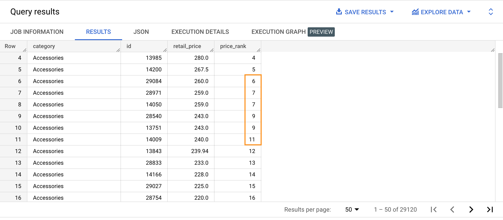

RANK is similar to the ROW_NUMBER function but its output is based on the value of the ranking column used in the ORDER BY inside the OVER clause. The rank may not be consecutive (for example, jumping from 1 to 5), taking into account rows with the same rank.
SELECT category,
id,
TRUNC(retail_price, 2) AS retail_price,
RANK() OVER (PARTITION BY category ORDER BY retail_price DESC) AS order_size_rank
FROM bigquery-public-data.thelook_ecommerce.products
ORDER BY category ASC;

{% include practice_problems_intructions.html %}bigquery-public-data.thelook_ecommerce.users
WITH age_ranked_country_users AS
( SELECT country,
CONCAT(first_name, ' ', last_name) AS full_name,
age,
RANK() OVER (PARTITION BY country ORDER BY age DESC, CONCAT(first_name, ' ', last_name) ASC, created_at ASC) AS age_rank
FROM bigquery-public-data.thelook_ecommerce.users
)
SELECT country,
full_name,
age,
age_rank
FROM age_ranked_country_users
WHERE age_rank IN (1, 2, 3)
ORDER BY country ASC;